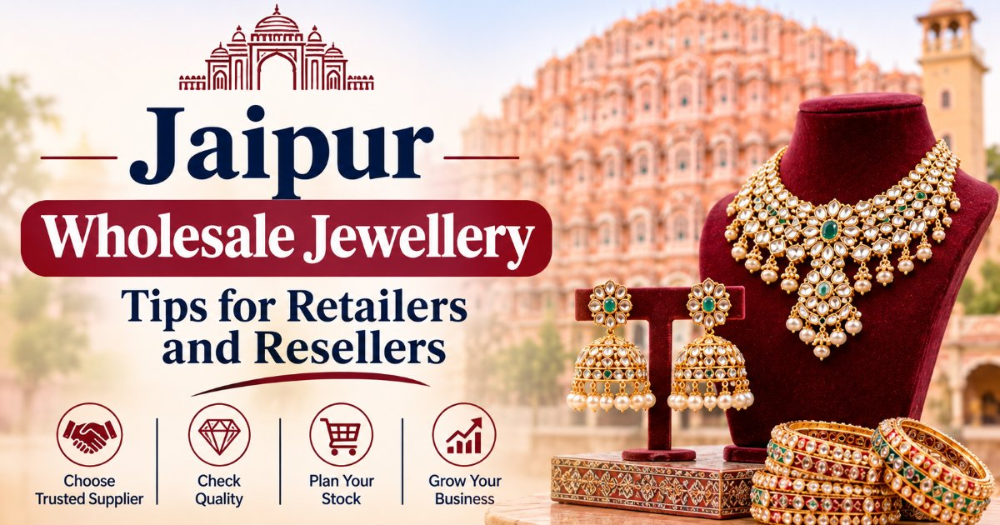

Jaipur Wholesale Jewellery: Tips for Retailers and Resellers
A practical guide to Jaipur’s wholesale jewellery markets, supplier selection, product quality, bulk orders and smart stock plans for retailers and resellers.

Jaipur is a well-known centre for traditional jewellery, gemstones and fashion accessories. Its markets offer a wide range of products, from Kundan and Meenakari sets to oxidised earrings, silver ornaments and artificial jewellery. This variety makes Jaipur a useful place for retailers, boutique owners and online resellers who need new designs for their shops.
But wholesale purchase is not just about low prices. The right product mix, material quality, supplier terms and customer demand all play an important role in retail business. A low-cost product may not offer good value if its quality is poor or customers do not like its design.
If you plan to buy stock from a Wholesale Jewellery Shop in Jaipur, this guide will help you select suitable products, compare suppliers and manage your jewellery stock with more care.
1. Why Do Retailers Buy Wholesale Jewellery from Jaipur?
Jaipur has a long history of jewellery craft and trade. The city is known for gemstone work, traditional ornaments, Kundan, Meenakari and silver jewellery. It also has suppliers who deal in modern fashion and artificial jewellery.
Retailers can explore different product categories at local markets and through online suppliers.
Some popular wholesale jewellery options include:
Kundan jewellery: Necklaces, earrings, chokers and traditional sets.
Meenakari jewellery: Colourful ornaments with enamel work.
Oxidised jewellery: Jhumkas, rings, necklaces and tribal-style accessories.
Artificial jewellery: Fashion sets, party-wear pieces and daily-use items.
Silver jewellery: Rings, anklets, chains and bracelets.
Bridal jewellery: Heavy necklaces, Maang Tikka and matching sets.
Gemstone jewellery: Rings, pendants and ornaments with coloured stones.
Johari Bazaar and Gopalji Ka Rasta are well-known areas for jewellery and gemstone trade. Surajpole also has a link with modern silver jewellery. The best area depends on the product type and supplier you need.
2. Which Wholesale Jewellery Items Should You Buy for Your Shop?
Your stock must match your customers' needs. A shop that serves college students may need a different collection from a bridal boutique.
Here are some product ideas for different customer groups.
Daily-Wear Jewellery
Customers who want simple accessories may prefer small and light designs.
You can add:
Small earrings
Simple chains
Light pendants
Minimal rings
Bracelets
Small bangles
These products can suit casual clothes, office wear and daily use. Check the locks, finish and comfort before you buy them in bulk.
Party-Wear Jewellery
Party-wear products suit customers who need accessories for family events, parties and festive occasions.
Popular choices include:
Stone-set earrings
Statement necklaces
Choker sets
Long earrings
American Diamond-style jewellery
Matching necklace and earring sets
Keep a mix of simple and bold designs. This gives customers more choice across different price ranges.
Traditional Jewellery
Traditional jewellery has a strong place in Jaipur's local market. Kundan, Meenakari and Rajputi-style designs can suit customers who prefer ethnic outfits.
You can explore:
Kundan earrings
Meenakari pendants
Rajputi necklaces
Oxidised jhumkas
Traditional bangles
Ethnic necklace sets
Ask the supplier about the metal base, stone type and finish. Do not assume that every traditional design uses precious stones or pure metals.
Bridal Jewellery
Bridal jewellery can attract customers who need products for weddings and family functions.
A selected range may include bridal sets, Maang Tikka, earrings, chokers and statement necklaces.
If your shop is new, start with a small collection. Check customer demand before you invest a large amount in heavy bridal sets.
3. How Can Retailers Select the Right Wholesale Jewellery Supplier?
A good supplier must offer more than a large product catalogue. You need clear product details, fair terms and reliable service.
Check these points before you place an order.
Product range: Does the supplier offer the jewellery categories your customers prefer?
Product quality: Check the finish, stone setting, locks, clasps and material.
Wholesale rates: Compare prices for similar products from more than one supplier.
Minimum order quantity: Ask how many pieces you must buy in one order or per design.
Repeat stock: Confirm whether the supplier can provide the same design again.
Delivery terms: Ask about dispatch time, parcel charges and delivery responsibility.
Defect policy: Check the terms for damaged or faulty pieces.
A supplier who gives clear answers can make future orders easier to manage.
4. How Much Wholesale Jewellery Stock Should a New Retailer Buy?
New retailers often face one common problem: how much stock to buy in the first order.
A large order may block your budget, while a very small collection may not offer enough choice to customers. A balanced first order is a better approach.
Use these steps:
Set a stock budget: Decide how much you can spend without affecting rent, staff costs and other shop expenses.
Select a few product types: Start with daily-wear, party-wear and traditional jewellery if these match your target customers.
Ask about mixed orders: Some suppliers may allow a mix of designs in one order. Confirm this before payment.
Check sample quality: Review a few pieces before you place a large order.
Track sales: Note which products sell fast and which remain in stock.
Place repeat orders: Buy more of the designs that customers prefer.
Do not copy another shop's stock plan without knowing its customer base. Your product range must suit your own market.
5. What Should You Check Before a Bulk Jewellery Purchase?
A product may look attractive in a photo, but its actual quality can differ. Always check the material and finish before a large order.
| Product detail | What to check |
|---|---|
| Base material | Brass, alloy, silver, steel or another metal |
| Plating | Gold-plated, silver-plated or oxidised finish |
| Stones | Natural, synthetic or imitation stones |
| Locks | Strong and easy-to-use clasps |
| Surface | Smooth finish without rough edges |
| Weight | Product weight as per supplier details |
| Quantity | Correct number of pieces in the parcel |
| Packaging | Safe packing to reduce damage |
For silver jewellery, ask whether the product is genuine 925 sterling silver or silver-plated. For gold-tone fashion jewellery, ask about the base metal and finish.
Clear product details also help you give correct information to your own customers.
6. Which Jaipur Markets Can Retailers Explore for Wholesale Jewellery?
Jaipur has several areas linked to jewellery and gemstone trade. You can select a market based on your product needs.
Johari Bazaar
Johari Bazaar is one of Jaipur's well-known jewellery markets. Buyers can explore traditional ornaments, gemstones, Kundan, Meenakari and silver-related products.
Some shops may serve both retail and trade buyers. Ask about wholesale rates, MOQ and bulk order terms.
Gopalji Ka Rasta
Gopalji Ka Rasta, near Johari Bazaar, has a link with gemstone and jewellery trade. It may suit buyers who need traditional jewellery or gemstone-related products.
Confirm the actual product range and supplier terms before you make a purchase.
Surajpole Market
Surajpole is another area associated with silver jewellery. Retailers who need silver ornaments can ask local suppliers about purity, weight, finish and order quantity.
Other Jaipur Areas
Jewellery businesses also operate in areas such as Vaishali Nagar, Malviya Nagar, Jagatpura, Jhotwara and Vidhyadhar Nagar. Some suppliers may offer direct orders through online catalogues.
Check the business address and services before you plan a visit.
7. How Can Resellers Set the Right Price for Wholesale Jewellery?
Buying at a low rate does not always mean a good profit. Resellers must calculate the full cost before they set the retail price.
Consider these expenses:
Wholesale purchase cost
Transport or courier charges
Packaging cost
Payment charges, if any
Shop or platform expenses
Cost of damaged or unsold stock
For example, if a jewellery piece costs ₹100 from a supplier and transport adds ₹10 per piece, your basic cost becomes ₹110. You must consider other expenses before you decide the sale price.
Also compare similar products in your target market. A very high price may reduce customer interest, while a very low price may leave little room for profit.
Keep a record of purchase rates and sale prices. This helps you understand which products offer better returns.
8. Can Retailers Buy Wholesale Jewellery Online from Jaipur?
Yes, some Jaipur suppliers accept orders through websites, online catalogues and direct contact. This can help retailers from other cities explore products without a market visit.
However, online purchase needs extra care because you cannot check the actual product before delivery.
Before payment:
Check the supplier's business name and address.
Ask for clear photos or a video of the actual product.
Confirm material, size, colour and product count.
Ask about MOQ and courier charges.
Read the return and damage policy.
Keep the order details and payment record.
Start with a small order if you have not worked with the supplier before.
When the parcel arrives, check the items at once. Report any damage within the supplier's stated time limit.
9. How Can You Find Wholesale Jewellery Suppliers Through Service Bazzar?
An online business directory can help you create a shortlist before you contact local shops.
Service Bazzar has a dedicated category for wholesale jewellery shops in Jaipur. The page displays local business profiles with details such as names, locations, ratings and contact options.
Some examples listed on the category page include:
SK Jewellers – Jhotwara
GCJ Gems and Jewellers – Jagatpura
Nimayah Jewellery – Jagatpura
Shri Ram Jewellers – Vaishali Nagar
Riddhi Siddhi Jewellers – Vaishali Nagar
Maa Jewellers – Vidhyadhar Nagar
These are examples of businesses listed in the directory, not a verified ranking of wholesale suppliers. A category listing does not confirm current wholesale rates, stock or MOQ.
Before you select a business, check its profile and contact details. Ask whether it accepts bulk orders, which jewellery types it sells and what terms apply to wholesale buyers.
This can help you shortlist local businesses according to your stock needs.
10. How Can Small Jewellery Shops Avoid Excess Stock?
Unsold stock can block money that you may need for other products. A simple stock plan can help you avoid this problem.
Watch customer demand: Note which designs customers ask about most often.
Buy new designs in small lots: Test a new style before you place a large order.
Keep a price range: Offer products at different rates so customers have more choice.
Plan festive stock early: Add suitable designs before festivals and wedding seasons. Confirm stock and dispatch dates in advance.
Review old stock: Check which products have not sold for a long time. Avoid repeat orders for those designs until demand improves.
Keep supplier records: Save item codes, rates, dates and contact details. This makes future orders easier.
A regular stock review can help you use your budget more wisely.
11. Common Mistakes Retailers Make During Wholesale Jewellery Purchase
Avoid these mistakes when you buy jewellery in bulk:
Buying a large quantity without a sample check.
Selecting products only because the supplier offers a low price.
Ignoring material and plating details.
Assuming all silver-look jewellery is genuine silver.
Skipping checks for locks, stones and finish.
Buying designs without a clear customer demand.
Ignoring MOQ and extra charges.
Failing to confirm delivery and defect terms in writing.
A careful purchase plan can reduce risk and help you build a better supplier relationship.
12. Frequently Asked Questions About Jaipur Wholesale Jewellery
1. Where can retailers buy wholesale jewellery in Jaipur?
Retailers can explore areas such as Johari Bazaar, Gopalji Ka Rasta and Surajpole. They can also review local supplier profiles on Service Bazzar and contact businesses to confirm wholesale terms.
2. Which wholesale jewellery items are popular in Jaipur?
Common options include Kundan, Meenakari, oxidised, artificial, bridal, silver and gemstone jewellery. The actual range depends on each supplier.
3. Can a new reseller buy jewellery in small quantities?
Some suppliers may accept small or mixed orders, while others have a fixed minimum order quantity. Ask about MOQ before you place an order.
4. How can I check artificial jewellery quality?
Check the base material, plating, stone setting, locks, surface finish and comfort. Ask the supplier about care needs and product details.
5. Is all silver-look jewellery made from real silver?
No. Some products use silver plating or other metal alloys. Ask whether the product is genuine 925 sterling silver or silver-plated.
6. Can I buy wholesale jewellery from Jaipur online?
Yes, some suppliers accept orders through websites and online catalogues. Check the business details, product specifications, payment terms and return policy before you pay.
7. What does MOQ mean in wholesale jewellery?
MOQ means Minimum Order Quantity. It is the smallest order a supplier accepts. It may apply to the full order or to each design.
8. How can I get a better wholesale rate?
Compare the same product type, material, size and finish across suppliers. Ask about rates at different order quantities and check all extra charges.
9. Which Jaipur market is known for traditional jewellery?
Johari Bazaar is well known for traditional jewellery and gemstone trade. Gopalji Ka Rasta is another nearby area linked to jewellery and gemstones.
10. Should I check a sample before a bulk order?
Yes. A sample lets you review the material, finish, size and quality before you spend more on a large order.
11. How can a reseller avoid unsold jewellery stock?
Start with a balanced product mix, track customer demand and place small test orders for new designs. Buy more only when you see a good response.
12. How can I compare wholesale jewellery suppliers in Jaipur?
Compare product range, material details, sample quality, MOQ, rates, delivery terms and defect policies. Contact more than one supplier before you make a choice.
Final Thoughts
Jaipur offers many jewellery styles for retailers, boutique owners and resellers. From traditional Kundan sets to modern fashion accessories, you can explore products that suit different customer groups and price ranges.
Before you place a bulk order, check the product material, review a sample, confirm the MOQ and get all price and delivery terms in writing. Start with a clear stock plan and use customer demand as a guide for future purchases.
To explore local business options, visit Service Bazzar and review its wholesale jewellery category. Contact the listed businesses directly to confirm their current products and wholesale terms.